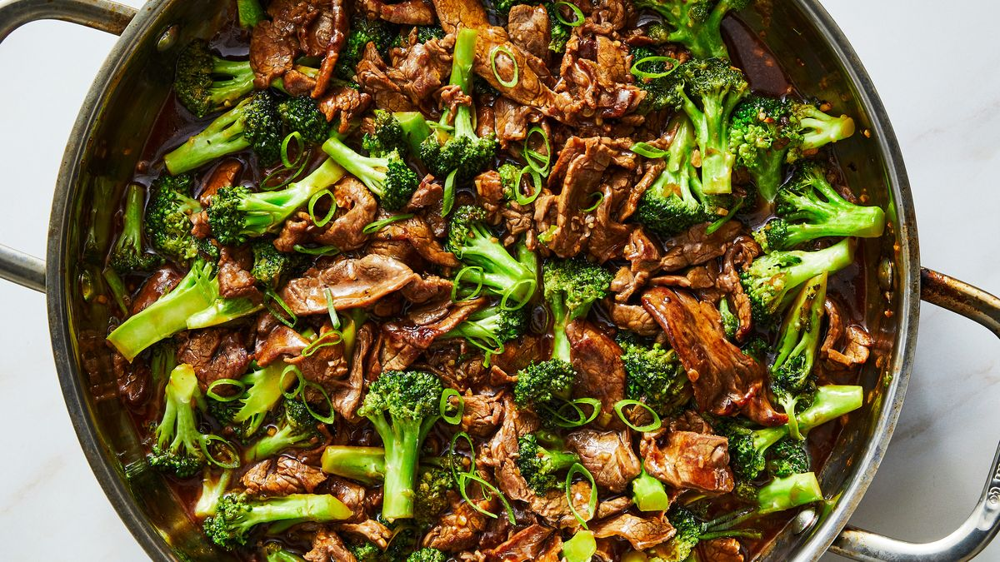

Broccoli Beef

Description
Broccoli beef is a classic asian dish with very straightforward preparation. Served over rice or noodles, this dish will affordably satisfy your appetite and tastebuds.
Ingredients
Stir fry
- Steak: 1 lb
- Broccoli: 1 head / 1 lb
- Olive oil
Sauce
- Soy sauce: 1 tsp
- Water: 3 cups
- Brown sugar: 1 tsp
- Vinegar: 1/4 cup
- Oyster sauce: 1/3 cup
- Sesame oil: 2 tsp
- Ginger root: 1 thin slice
- Minced Garlic: 1 clove
- Corn starch: 1 tsp
Steps
-
Whisk oyster sauce, sherry, sesame oil, soy sauce, sugar, and corn starch together in a bowl; stir until sugar has dissolved.
-
Place steak in shallow bowl. Pour oyster sauce mixture over meat and stir to coat; cover and marinate in the refrigerator for at least 30 mins.
-
Heat vegetable oil in a wok or large skillet over medium-high heat. Add ginger and garlic; let sizzle for about 1 minute to flavor oil, then remove and discard. Stir in broccoli. Toss and stir until bright green and almost tender, 5 to 7 mins. Remove broccoli from the wok and set aside.
-
Add a little more oil to the wok, if needed, then add beef with marinade. Stir and toss until sauce thickens and turns shiny and meat is no longer pink, about 5 mins. Return broccoli to the wok; stir until heated through, about 3 mins.